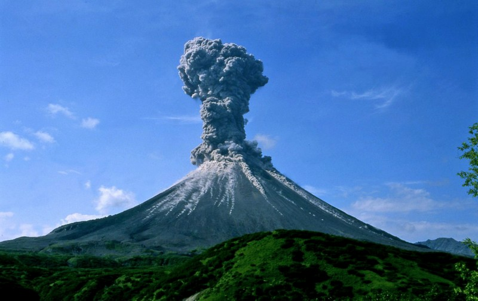
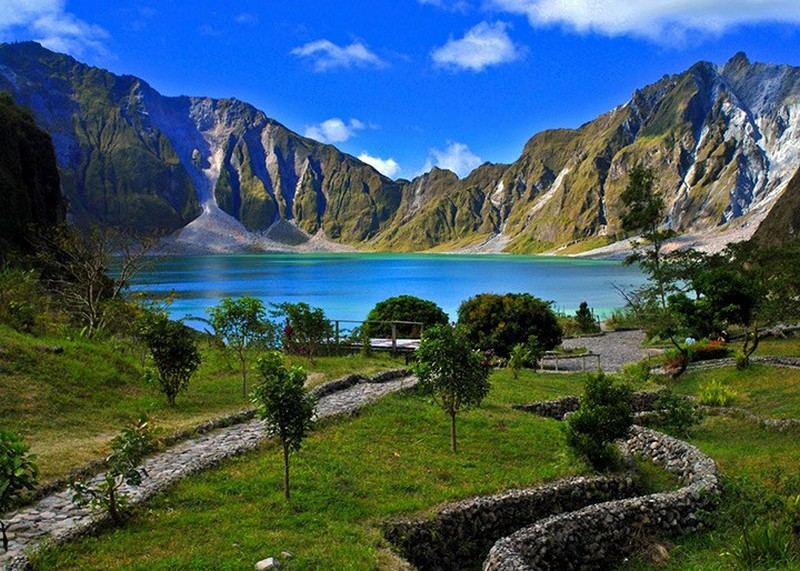
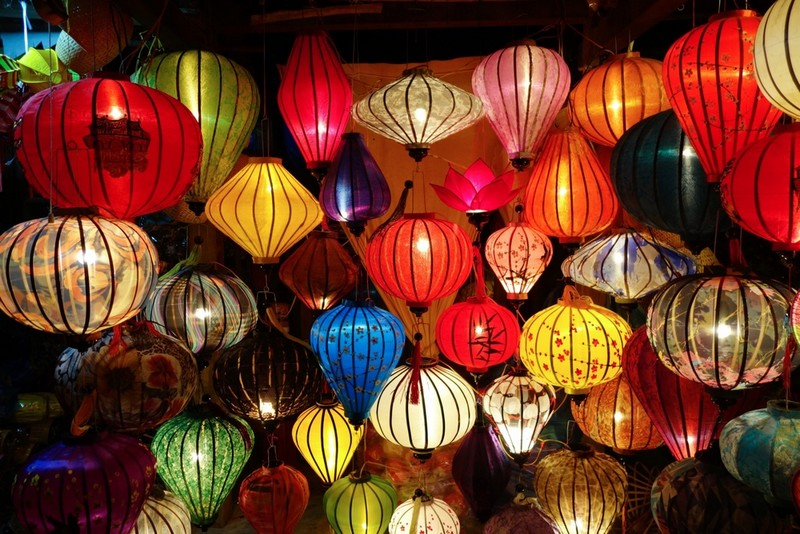
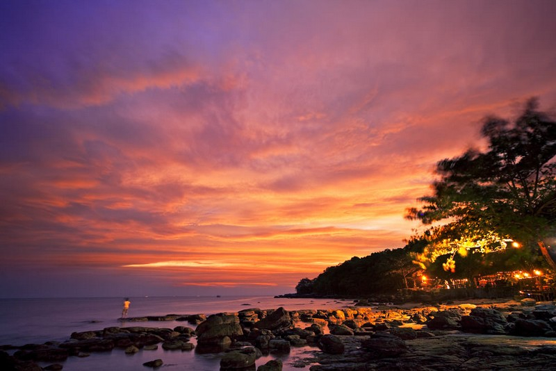
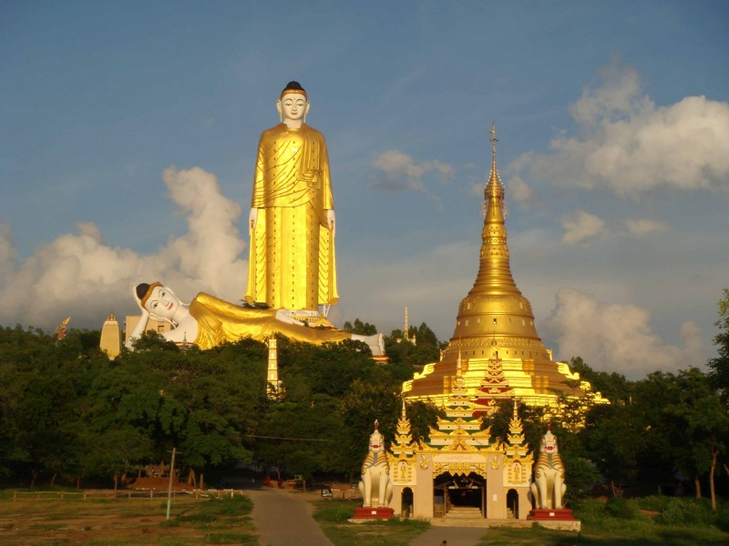

Singapore - Kota Kinabalu
Borneo
Mount Kinabalu Trek (4,095 m)
Stays:- Jungle Jack Backpacker
- Masada Backpacker
- Not "easy" (especially the climbing down) but can be done without real preparation if motivated! And totally worth it!
Kota Kinabalu - Manila
Luzon (Manila's Island)
Banaue & Batad Rice Terraces
Stay:- Brookside Inn
- Went there and back with night bus (not really comfortable but ok). Rice paddies are really impressive!
Manila
Stay:- Pink Manila Hostel
Mount Pinatubo (1,486 m, last erruption in 1991)
  Comments:- It ended up being a bit expensive and longer than we expected so we were too short on time to do it.
Manila - Hanoi
North Vietnam
Hanoi
Stay:- Hanoi Backpackers Hostel - The Original
Sapa
Stay:- Go Sapa Hostel
- Went there and back with sleeper train, quite comfortable (4 person cabins with A/C). Nice moutain area. Rice paddies are more spread than in Banaue.
Halong Bay
Stay:- "Royal Imperial" Boat
 Comments:
Comments:
- Two-days/One-night cruise. Got upgraded on a 4-star boat while booking a 3-star one.
Hanoi - Da Nang
Hoi An
Stay:- Villa Riverview
Lantern festival (20th May)
 Comments:- Couldn't be there for the festival (leaving in the morning) but there are some lanterns continuously in the center. Nice at night.
Vietnam Tour from Hoi An to Nha Trang
20 May 2016 - 23 May 2016Nha Trang - Ho Chi Minh (sleeper bus)
Ho Chi Minh - Phnom Penh (day bus)
23 May 2016 - 24 May 2016Cambodia
Phnom Penh
Stay:- One Stop Hostel
Sihanoukville
 Comments:- Cancelled to have a less rushy schedule, first two weeks were a bit of a rush.
Siem Reap (Angkor Wat)
Stay:- The Mad Monkey Hostel Siem Reap
Siem Reap - Bangkok (day bus)
Bangkok - Chian Mai (sleeper train)
30 May 2016 - 31 May 2016North Thailand
Chiang Mai
Stay:- Stamps Backpackers
- A lot of peole going to Pai instead of Chiang Rai after Chiang Mai. But too late to change the plans anyway.
Chiang Rai
Stay:- Mercy Hostel
Chiang Rai - Bangkok
Bangkok (6 hours)
Stay:- DMK Hostel Donmueang Airport
- Very close to the airport, just to have a place to sleep a bit.
Bangkok - Yangon
Myanmar
Yangon
Bagan
Stay:- Ostello Bello
- Hostel more expensive than what I expected or Myanmar but not a lot of choice anyway.
Mount Bota (Taug Kala Monastery)
 Comments:
Comments:
- Cancelled.
Trek Kalaw - Inle Lake (2 days / 1 night)
With:- Ever Smile Trekking
Inle Lake (Nyaung Shwe)
Stay:- Song of Travel Hotel
Monywa
 Comments:- Cancelled.
Mandalay
Stay:- Hotel A1